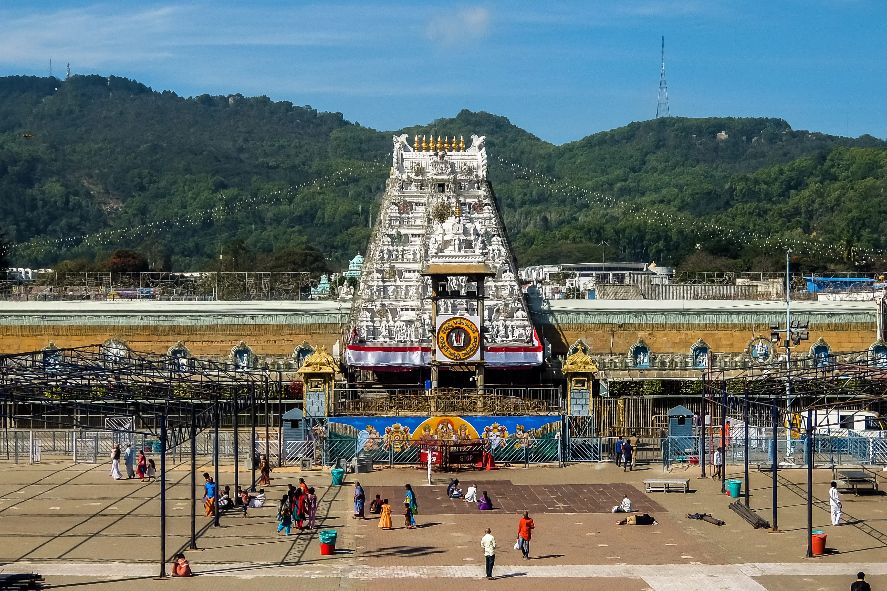
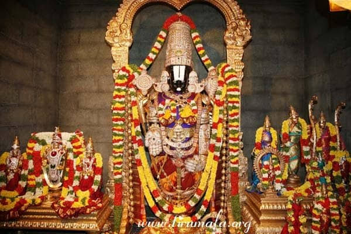

Darshan Timings
Check the temple's official timings before your visit, as schedules may vary on festival days.

SACRED PLACES · VIJAYAWADA
Discover a place of devotion, tradition and spiritual peace.
Explore Temple ↓Lord Venkateswara is a revered form of Lord Vishnu worshipped by devotees across India. Temples dedicated to him are important places of prayer, faith and traditional worship.
A visit to a Venkateswara Swamy temple offers an opportunity to experience devotional customs, offer prayers and appreciate the spiritual traditions associated with the deity.
Before travelling, confirm the exact temple location and its current visitor information.
Check the temple's official timings before your visit, as schedules may vary on festival days.
Dress respectfully, follow temple guidelines and maintain a peaceful atmosphere.
Confirm the exact temple address in Vijayawada before planning your journey.

Take time to offer prayers, observe the temple's traditions and appreciate the devotion that brings visitors together.
If you're visiting during a festival, check for special darshan arrangements and crowd management guidelines before setting out.
← Explore more templesDISCOVER THE SPIRITUAL SIDE OF VIJAYAWADA